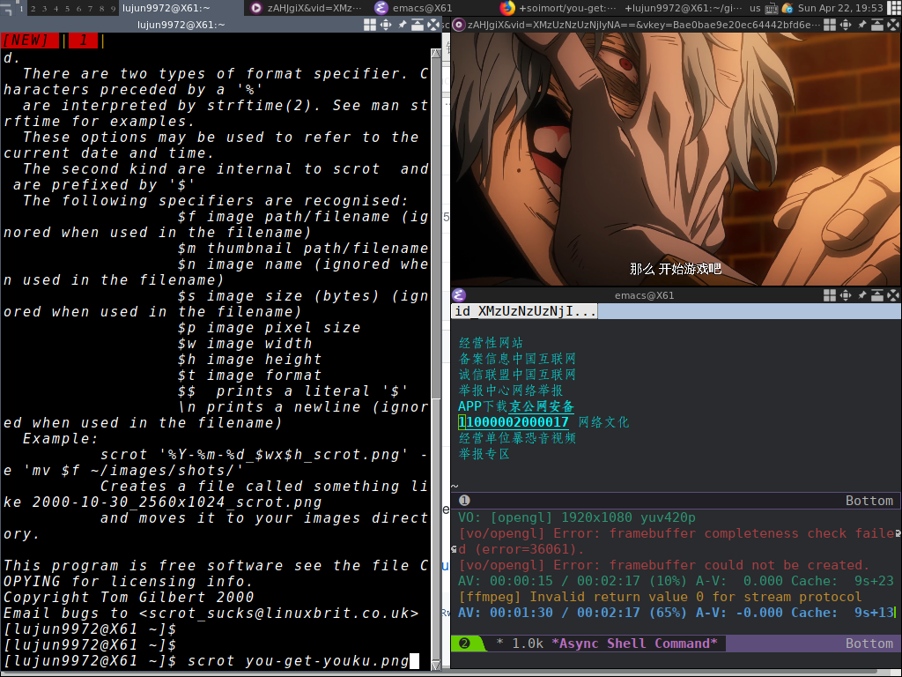

借助you-get在Emacs中看youku视频
Emacs中最常用的的浏览网页的方法就是w3m和eww，然而不管哪种方法都不支持flash及html5，这意味着无法直接在Emacs中看视频网站中的视频了。
不过不要紧，我们有援军啊。
you-get是一款网页视频的下载利器，它支持大部分的视频网站。
you-get --help
usage: you-get [OPTION]... URL...
A tiny downloader that scrapes the web
optional arguments:
-V, --version Print version and exit
-h, --help Print this help message and exit
Dry-run options:
(no actual downloading)
-i, --info Print extracted information
-u, --url Print extracted information with URLs
--json Print extracted URLs in JSON format
Download options:
-n, --no-merge Do not merge video parts
--no-caption Do not download captions (subtitles, lyrics, danmaku,
...)
-f, --force Force overwriting existing files
-F STREAM_ID, --format STREAM_ID
Set video format to STREAM_ID
-O FILE, --output-filename FILE
Set output filename
-o DIR, --output-dir DIR
Set output directory
-p PLAYER, --player PLAYER
Stream extracted URL to a PLAYER
-c COOKIES_FILE, --cookies COOKIES_FILE
Load cookies.txt or cookies.sqlite
-t SECONDS, --timeout SECONDS
Set socket timeout
-d, --debug Show traceback and other debug info
-I FILE, --input-file FILE
Read non-playlist URLs from FILE
-P PASSWORD, --password PASSWORD
Set video visit password to PASSWORD
-l, --playlist Prefer to download a playlist
-a, --auto-rename Auto rename same name different files
Proxy options:
-x HOST:PORT, --http-proxy HOST:PORT
Use an HTTP proxy for downloading
-y HOST:PORT, --extractor-proxy HOST:PORT
Use an HTTP proxy for extracting only
--no-proxy Never use a proxy
-s HOST:PORT, --socks-proxy HOST:PORT
Use an SOCKS5 proxy for downloading
通过浏览它的参数可以看到它有一个 -p PLAYER 参数，能够调用第三方的播放器来直接播放网页上的视频。
这就很好办了，我们可以把下面代码加入到初始化文件中:
(defvar play-this-video-player "mpv --autofit=100%" "mplayer used to play the video") (defun play-this-video () (interactive) (let ((url (or w3m-current-url (eww-current-url) (error "only w3m and eww supported"))) (player play-this-video-player)) (shell-command (format "you-get %s -p '%s' &" url player))))
将其中 play-this-video-player 变量设定自己喜欢的第三方播放器及其播放参数。该变量的值会被传入命令行中作为 you-get 的 -p 的参数值。
然后在w3m或eww中浏览视频网页后，只需要执行 M-x play-this-video 就能播放该网页上的视频了
